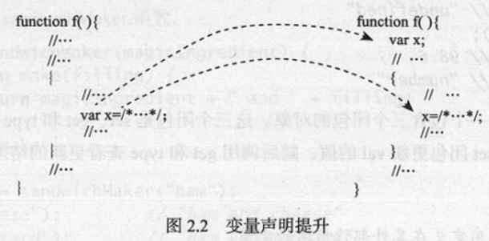

effective-javascript笔记-2
变量作用域
8. 尽量少用全局对象
由于全局命名空间是JS程序中独立组件进行交互的唯一途径,因此,利用全局命名空间的情况是不可避免的.
JS的全局命名空间也被暴露为程序全局作用域中可以访问的全局对象,该对象作为this关键字的初始值.
在浏览器中,全局对象被绑定到全局的window变量,添加或修改全局变量会自动更新全局对象.1
2
3
4
5
6
7
8this.foo; // undefined
foo = 'global foo';
this.foo; // 'global foo'
// 或更新全局对象
var foo = 'global foo';
this.foo = 'changed';
foo; // 'changed'
特性检测是一种使程序在平台特性集合的变化中依旧健壮的相对简单的方法,也可以使同一技术在浏览器和服务器环境下共享库.1
2
3
4
5
6
7// 检测 JSON (从ES5引入) 对象是否存在
if(!this.JSON){
this.JSON = {
parse: //... ,
stringify: //...
};
}
1. 避免声明全局变量
2. 避免对全局对象添加属性
3. 使用全局对象来做平台特性检测
9. 始终声明局部变量
意外的创建全局变量将是灾难.
1. 始终用var声明新的变量
2. 考虑使用lint工具帮助检测未绑定的变量
10. 避免使用with
with语句可以很方便的避免对对象的重复引用, 但将使程序变得不可靠和低效.
1. 使用简短的变量名代替重复访问的对象
2. 显示的绑定局部变量到对象属性上,而不是使用with语句隐式地绑定他们
11. 熟练掌握闭包
理解闭包需要掌握三点:
1. JS允许引用在当前函数以外定义的变量
1 | function makeSandwich(){ |
make函数中引用了外部的magic变量
2. 即使外部函数已经返回,当前函数依然可以引用在外部函数所定义的变量
1 | function sandwichMaker(){ |
与第一例子几乎一样,但是不是返回调用后的make函数,而是返回make函数本身,因此,f的值为内部的make函数,调用f实际上调用了make函数,但即使sandwichMaker已经返回,make函数仍然记着了magic的值。
闭包工作原理:
JS的函数值在内部存储他们可能会引用的定义在其内封闭作用域的变量.
那些在其涵盖的作用域内跟踪变量的函数被称为闭包.make函数就是一个闭包,它引用了两个外部变量,magic和filling,每当make函数被调用,其代码都能引用到这两个变量,因为闭包存储了这些变量.
函数可以引用在其作用域内的任何变量,包括参数和外部变量:1
2
3
4
5
6
7
8
9
10
11
12
13
14function sandwichMaker(magic){
function make(filling){
return magic +' and ' + filling;
}
return make;
}
var f = sandwichMaker('ham');
f('jelly'); // 'ham and jelly'
f('bananas'); // 'ham and bananas'
var f = sandwichMaker('turkey');
f('cheess'); // 'turkey and cheess'
f('bananas'); // 'turkey and bananas'
闭包是JS最有用的特性之一,也是许多库和惯用法的核心.JS还有一种更方便的构造闭包的方法，即函数表达式（字面量语法）.1
2
3
4
5function sandwichMaker(magic){
return function (filling){
return magic +' and ' + filling;
}
}
该函数表达式是匿名的,由于只需一个make函数能产生新的函数值,而不打算在局部调用它,因此没有必要给该函数命名
3. 闭包可以更新外部变量的值
实际上,闭包存储的是外部变量的引用,而不是值的copy.因此,对任何具有访问这些外部变量的闭包,都可以更新他们.1
2
3
4
5
6
7
8function box(){
var val = undefined;
return {
set: function(newval){ val = newval;},
get: function(){return val;},
type: function(){return typeof val;}
}
}
1. 函数可以引用定义在其外部作用域的变量
2. 闭包比创建他们的函数有更长的生命期
3. 闭包在内部存储其外部变量的引用,并能读写这些变量
12. 理解变量声明提升
JS支持词法作用域(lexical scoping),即对变量foo的引用将被绑定到声明foo变量最近的作用域中.1
2
3
4
5
6
7
8
9function isWinner(player, others){
var higher = 0;
for(var i = 0, n = others.length; i< n; ++i){
var player = others[i]; // 此处的var声明,将会使player变量被覆盖,每次都重写
if(player.score > higher)
highest = player.score;
}
return player.score > highest;
}
由于for循环内部声明的player局部变量,每次都会重写同一个变量, 所以return语句将player看作others的最后一个元素,而不是最初的player参数了.

JS没有块级作用域的例外是异常处理, try...catch语句将捕捉的异常绑定到一个变量,而该变量的作用域只是catch语句块.1
2
3
4
5
6
7
8
9
10
11
12function test(){
var x = 'var', result = [];
try {
throw 'exception';
}catch(x){
x = 'catch'; // 此行的x已经是在块级作用域下了，所以随着作用域结束而销毁了
console.log(x); // 'catch'
}
result.push(x);
return result;
}
test(); // ['var']
1. 在代码块中的变量声明会被隐式地提升到封闭函数的顶部
2. 重声明变量被视为单个变量
3. 考虑手动提升变量的声明,可以避免混淆
13. 使用立即调用的函数表达式创建局部作用域
如下程序输出什么?1
2
3
4
5
6
7
8
9
10
11function wrapElements(a){
var result = [], i , n;
for(i = 0, n = a.length; i < n; ++i){
result[i] = function(){ return a[i] };
}
return result;
}
var wrapped = wrapElements([10,20,30,40]);
var f = wrapped[0];
f(); // ?
希望输出10, 但实际上它输出undefied,
搞清楚该例子是理解绑定和赋值的区别, 在运行时进入一个作用域, JS会为每一个绑定到该作用域的变量在内存内分配一个”槽”(slot)
wrapElements函数绑定了三个局部变量: result, i, n, 因此, 当它被调用的时候,wrapElements函数会为这三个变量分配槽. 在每次迭代中循环体都会为嵌套函数分配一个闭包.
这个例子的坑在于: 期望该函数存储的是嵌套函数创建时变量i的值, 但实际存储的是变量i的引用. 由于每次函数创建后变量i的值都发生了变化, 因此,内部函数最终看到的变量i的值为4, 而a[4]值为undefined
所以需要注意, 闭包存储的是其外部变量的引用而不是值 解决的方法是创建一个嵌套函数并立即调用它来强制创建一个局部作用域.1
2
3
4
5
6
7
8
9
10function wrapElements(a){
var result = [];
for(var i = 0, n = a.length; i < n; ++i){
(function(){
var j = i; //使用j这个局部变量保存每一次i的值
result[i] = function(){ return a[j] };
})()
}
return result;
}
另一种方法为变种,是将i作为IIFE的形参(局部变量)班定到IIFE,每次调用将其值作为实参传入1
2
3
4
5
6
7
8
9function wrapElements(a){
var result = [];
for(var i = 0, n = a.length; i < n; ++i){
(function(j){
result[i] = function(){ return a[j] };
})(i)
}
return result;
}
但是这种IIFE的方式也存在一些弊端,如:
代码块不能包含任何跳出块的break语句和continue语句, 代码块引用了this或arguments变量时,IIFE会改变它们
1. 理解绑定与赋值的区别
2. 闭包通过引用而不是值捕捉外部变量
3. 使用IIEF来创建局部变量
4. IIFE中的代码块可能修改预期行为
14. 当心命名函数表达式的作用域
1 | function double(x){ return x * 2; } // 命名函数声明 |
使用命名函数表达式进行递归似乎没必要,因为外部作用域的函数名也可以达到同样的效果, 命名函数表达式真正的用处在于调试, 在栈跟踪中,函数表达式的名称通常作为入口使用,
1. 在Error对象和调试器中使用命名函数表达式改进栈跟踪
2. 在ES3和有问题的JS环境中需要记住:函数表达式作用域会被Object.prototype污染
3. 谨记在错误百出的JS环境中会提升命名函数表达式声明,并导致命名函数表达式的重复存储
4. 考虑避免使用命名函数表达式或在发布前删除函数名
15. 当心局部块函数声明的作用域
1 | function f(){return 'global';} |
1. 始终将函数声明置于程序或被包含的函数的最外层以避免不可移植的行为
2. 使用var声明和有条件的赋值语句替代有条件的函数声明
16. 避免使用eval创建局部变量
eval能将字符串解析为js语句并执行1
2
3
4
5function test(x){
eval('var y=x;');
return y;
}
test('hello'); // 'hello'
eval函数直接执行赋予了外部调用者能改变test函数内部作用域的能力.1
2
3
4
5
6
7
8
9
10
11
12
13
14
15
16var y = 'global';
function test(src){
eval(src);
return y;
}
test('var y = "local";'); // 'local'
test('var z = "local";'); // 'global'
// 使用IIFE能避免污染内部作用域
var y = 'global';
function test(src){
(function (){ eval(src); })();
return y;
}
test('var y = "local";'); // 'global'
test('var z = "local";'); // 'global'
1. 避免使用eval函数创建的变量污染调用者的作用域
2. 若eval函数代码可能创建全局变量,将此调用封装到嵌套的函数中以防止作用域污染
17. 间接调用eval函数优于直接调用
eval函数不仅仅是一个函数, 因为eval函数具有访问调用它时的整个作用域的能力.
一般情况下,函数调用涉及eval标识符时,被认为是直接调用eval函数1
2
3
4
5
6var x = 'global';
function test(){
var x = 'local';
return eval('x'); // 直接调用
}
test(); // 'local'
这种情况下, 编译器需要确保被执行的程序具有完全访问调用者局部作用域的权限
而其他调用eval函数的方法被认为是间接的,这些方式在全局作用域内对eval函数的参数求值.
例如绑定eval函数到另外一个变量名, 通过该变量名调用函数会使代码失去对所有局部作用域的访问能力1
2
3
4
5
6
7
8var x = 'global';
function test(){
var x = 'local';
var f = eval(); // 间接调用
return f('x');
}
test(); // 'global'
// 在chrome下为 Error: f is not a function
编写间接调用eval函数的一种简单方式是使用表达式序列运算符(逗号,)和一个毫无意义的数字字面量(0,eval)(src);这种方式被认为是间接调用eval函数.